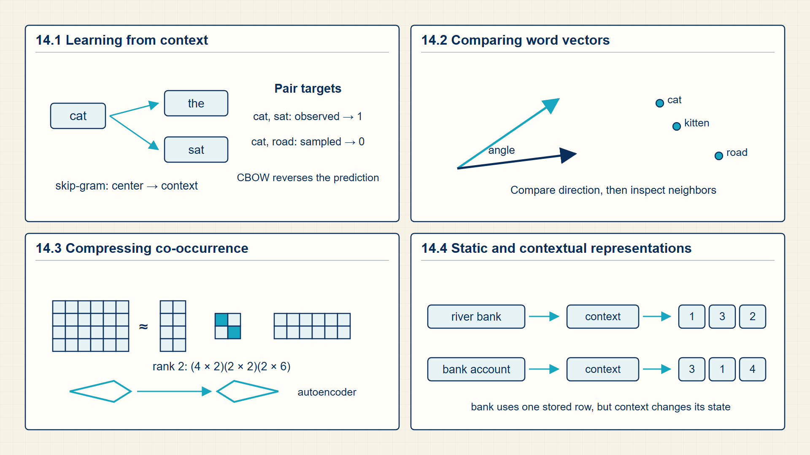
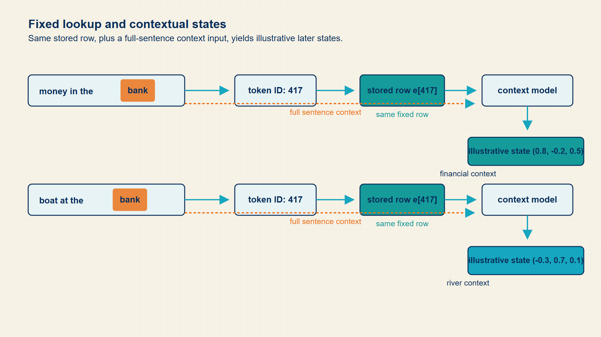

14 Word2Vec: Learning Word Geometry from Context
Embedding rows begin as arbitrary numbers. A context-prediction objective changes them until useful patterns of co-occurrence are reflected in the geometry of the space.
Embeddings become useful when training pushes related contexts toward compatible vectors. Word2Vec, cosine similarity, and negative sampling show the objective and shortcuts behind that learning process.
In code, PyTorch dot products and logsigmoid implement predictive embedding losses; Gensim provides a course-adjacent reference implementation for Word2Vec experiments.

14.1 Learning Word Meaning from Co-Occurrence Windows (Word2Vec)
Word2Vec learns embeddings from local context. The training task is artificial but useful: predict a word from context or predict context from a word, so words used similarly obtain similar vectors.
- Skip-gram: A task that predicts surrounding context words from a center word.
- CBOW: Continuous bag-of-words, a task that predicts a center word from surrounding context.
- Negative sampling: Training against a small set of sampled non-context words instead of a full vocabulary softmax.
- Center vector: The embedding used for the word whose context is being predicted.
- Context vector: The embedding used for a neighboring word being scored against the center word.
- Negative sample: A sampled word treated as a non-context pair for one update.
The Word Embeddings notebook introduces this idea through training and visualization. The key lesson is that labels can be created from raw text itself, without human annotation.
Negative sampling matters because a full vocabulary softmax is expensive. By contrasting true context pairs with sampled false pairs, the model receives a cheaper learning signal.
Origin note: Word2Vec builds on distributional semantics: words used in similar contexts tend to have related meanings. Skip-gram and CBOW turn that linguistic idea into predictive training objectives.
The embeddings notebook makes the objective observable through Gensim. Word2Vec builds training pairs from a context window, updates vectors, and exposes the learned matrix through model.wv. Cosine similarity, nearest neighbors, analogies, and two-dimensional plots are inspection operations performed after training rather than additional learning objectives.
Matrix factorization provides a second representation-learning view. Singular value decomposition (SVD) compresses a co-occurrence matrix into lower-dimensional factors, while an autoencoder learns a compressed bottleneck by reconstructing its input. These methods differ from skip-gram, but all convert observed structure into a lower-dimensional representation.
Skip-gram gives every training pair a scalar score: the dot product of a center vector and a context vector. A high positive score makes sigmoid close to one; a low or negative score makes sigmoid close to zero.
Negative sampling replaces a full vocabulary comparison with a small contrast. One observed center-context pair is pushed toward a high score, while a few sampled non-context pairs are pushed toward low scores. Similarity appears after many such updates, not from a separate geometric rule.
Skip-gram predicts surrounding context tokens from the center token.
Skip-gram objective:
\[ \operatorname*{maximize}\;\sum_{t}\sum_{c\in\operatorname{context}(t)}\log P(x_{c}\mid x_{t}) \tag{14.1}\]
where \(x_{t}\) is center token; \(x_{c}\) is context token.
Skip-gram treats nearby observed words as positive prediction targets for the center word.
the objective moves words with similar contexts toward useful geometry.
CBOW predicts the center token from surrounding context.
CBOW objective:
\[ \operatorname*{maximize}\;\sum_{t}\log P(x_{t}\mid\operatorname{context}(t)) \tag{14.2}\]
Negative sampling trains the observed pair against sampled non-observed pairs.
Negative sampling:
\[ \log\sigma(u_{o}^{T}v_{c})+\sum_{k=1}^{K}\mathbb{E}_{n_{k}}\!\left[\log\sigma(-u_{n_{k}}^{T}v_{c})\right] \tag{14.3}\]
Example: Scoring one observed pair and one sampled non-pair
Use center vector \(v_c=(1,0)\), observed-context vector \(u_o=(2,0)\), and sampled negative vector \(u_n=(-1,0)\).
Observed pair:
\(u_{o}^{T} v_{c} = 2\)
\(\operatorname{sigmoid}(2) = 0.881\)
The observed pair already receives a high probability.
Sampled non-pair:
\(u_{n}^{T} v_{c} = -1\)
\(\operatorname{sigmoid}(-1) = 0.269\)
The negative pair receives a lower probability.
Training direction:
The positive-pair loss raises the observed dot product.
The negative-sample loss lowers the sampled non-pair dot product.
The objective changes vector coordinates until useful context pairs tend to have larger dot products than sampled alternatives.
The following runnable Gensim example trains skip-gram Word2Vec on three tokenized sentences, then prints the shape of one eight-coordinate vector, one cosine similarity, and two nearest neighbors. The random initialization and very small corpus make the numerical neighbors unstable, so the code demonstrates library use and tensor shape rather than meaningful language structure.
Code example: Training and inspecting a small Word2Vec model
from gensim.models import Word2Vec
sentences = [
["cat", "sat", "mat"],
["dog", "sat", "rug"],
["cat", "chased", "dog"],
]
model = Word2Vec(
sentences,
vector_size=8,
window=2,
min_count=1,
sg=1,
epochs=100,
)
print(model.wv["cat"].shape)
print(model.wv.similarity("cat", "dog"))
print(model.wv.most_similar("cat", topn=2))The trained vocabulary exposes an eight-coordinate vector per token and similarity-based inspection methods.
This corpus is far too small for semantic conclusions; it only demonstrates the API-to-math mapping.
Word2Vec learns vector relationships by predicting nearby words from local context. Similarity measures and negative examples make those learned relationships visible and trainable.
14.2 Measuring Semantic Closeness with Cosine Similarity and Vector Math
Embedding similarity is a numerical comparison between learned vectors, usually used to ask which tokens or sentences are close in representation space.
- Dot product: A similarity score that grows when two vectors point in similar directions and have large magnitudes.
- Cosine similarity: A normalized similarity score that compares direction while removing vector length from the comparison.
- Nearest neighbor: The vocabulary item or example with the largest chosen similarity score to a query vector.
Similarity is not a dictionary definition. It is the result of the training objective: words that appear in similar contexts receive updates that tend to move their vectors into similar directions.
The implementation is a matrix computation. A query vector can be multiplied by many stored vectors at once, producing one similarity score per candidate. Retrieval and analogy demos are convenient because they expose the geometry learned by the embedding objective.
Cosine similarity measures the angle between two word vectors independently of their lengths, capturing semantic relatedness.
In some large training corpora, the nearest neighbor to the vector calculation king - man + woman is queen. This can reveal a direction learned from repeated usage patterns, but it is not reliable meaning algebra: the result can change with the corpus, training seed, vocabulary, or words with several senses.
Cosine compares direction while ignoring vector scale.
Cosine similarity:
\[ \cos(u,v)=\frac{u^{T}v}{\lVert u\rVert_{2}\,\lVert v\rVert_{2}} \tag{14.4}\]
where u, v is two embedding vectors; ||u|| is euclidean norm of u.
Cosine measures direction rather than raw vector length.
Example: Cosine similarity
For vectors (1,0) and (1,1), the cosine similarity is about 0.707.
Cosine similarity compares vector direction rather than raw magnitude. Negative sampling makes it feasible to train those vectors without scoring every vocabulary entry at every step.
14.3 Compressing Co-Occurrence Structure with Low-Rank Factors
A large word-context matrix can be replaced by a smaller set of latent directions when most useful variation lies in a lower-dimensional subspace.
- Singular value decomposition: A factorization of a matrix into left directions, singular values, and right directions.
- Low-rank approximation: A reconstruction that retains only a selected number of singular directions.
- Autoencoder: A neural network trained to reconstruct its input through a narrower hidden representation.
A co-occurrence matrix is usually large and sparse. Singular value decomposition separates its variation into ordered directions; retaining the first r directions produces dense coordinates that preserve the strongest structure while discarding weaker directions.
An autoencoder applies the same compression goal with learned nonlinear transformations. Its encoder maps the input to a bottleneck vector, and its decoder reconstructs the original input from that vector.
The compressed factors describe a representation matrix. They do not change model parameters or define a fine-tuning update.
Truncating the factorization to r directions gives a rank-r approximation of the original matrix.
Rank-r representation:
\[ M\approx U_{r}\Sigma_{r}V_{r}^{T} \tag{14.5}\]
where M is word-context or document-feature matrix; \(U_{r}\) is retained left singular directions; Σᵣ is retained singular values; \(V_{r}\) is retained right singular directions.
Multiplying the retained factors reconstructs the component of M carried by the selected singular directions.
The rank r controls the representation width and the amount of matrix structure retained.
Example: Storage in a rank-50 representation
A 1,000 by 500 matrix contains 500,000 values before compression.
Left factor:
\(U_{r}\) has dimensions [1000,50] and contains 50,000 values.
Singular values:
The diagonal factor contributes 50 singular values.
Right factor:
\(V_{r}^{T}\) has dimensions [50,500] and contains 25,000 values.
Result:
The rank-50 factors contain 75,050 values instead of 500,000.
The saving appears when r is much smaller than both original matrix dimensions.
Negative sampling replaces one full-vocabulary normalization with a small set of positive and negative comparisons. Static vectors still give one row per token regardless of surrounding context.
14.4 Distinguishing Static Word Vectors from Contextual Sequence Representations
A static embedding assigns one learned vector to a token type, whereas a contextual representation also depends on the surrounding sequence.
- Static embedding: A token vector that is the same in every context.
- Contextual embedding: A token representation that changes according to surrounding tokens.
- Hidden state: An internal representation produced by a model layer.
The word ‘bank’ has one row in a static embedding table but different contextual meanings in ‘river bank’ and ‘bank account’. Contextual models address this by updating representations through sequence layers.
This transition from static to contextual representation is one of the central mathematical moves from Word2Vec to transformers.
Contextual models compute a new representation for a token from neighboring positions. The next part introduces sequence mechanisms that can construct those context-dependent vectors.
14.5 Visualizing Word2Vec Embedding Geometry and Vector Arithmetic
Training turns token lookup rows into geometries and contextual states that support later tasks.
Static embeddings assign one row to a word type; contextual models compute a token representation from the surrounding sentence.

The same surface word can receive different vectors in different contexts. This is the bridge from Word2Vec-style tables to transformer hidden states.
Representation objectives make vector geometry meaningful by rewarding useful similarities and contrasts.
Fixed-history and recurrent models establish the sequence-context problem that attention addresses.